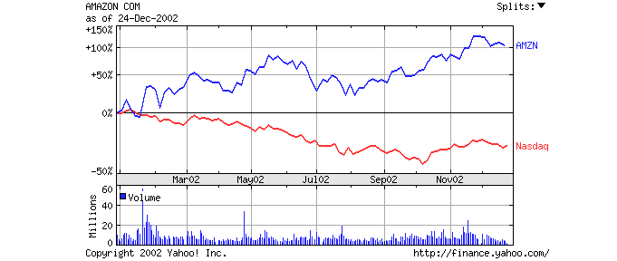

|
>본론>끝나지 않은 닷컴 신화 – Amazon.com |
|
|
|
끝나지 않은 닷컴 신화 – Amazon.com |
앞서 2000년 Bloody Friday를 기점으로 다른 닷컴 기업들과 마찬가지로Amazon.com 역시 회의론에 부닥치게 되었다고 하였다. 하지만 현재 Amazon.com은 살아남았고, 재기하였다. 이번 장에서는 Amazon.com의 부활과 그 원동력에 대해 알아보려 한다.
|
단계 |
1단계: 태동기 (1995~1997) |
2단계: 고성장기 (1997~1999말) |
3단계: 하강기 (1999말~2002초반) |
4단계: 수습기 (2000초반 이후) |
|
특징 |
l 선두기업들의 약진 |
l 인터넷사용자의 급증 l 주가의 급격한 상승 l 닷컴에 대한 관심 고조 |
l 주가의 급락 l 유명 닷컴의 도산 l 오프라인 기업의 반격 |
l 비즈니스 모델 강화 l 오프라인과의 연계모색 |
<Reference: 닷컴 기업의 위기와 오프라인 진출전략. 이웅희, 한창수 삼성경제연구소 수석연구원>
그 동안 Amazon.com이 막대한 적자 경영을 해왔다는 것은 잘 알려진 사실이다. 이러한 적자 경영이 회의론과 맞물려 Amazon.com을 압박해왔었다. 하지만 최근 2년간(2001년, 2002년) 경영 실적은 이러한 우려를 씻어내기에 충분했다. 계속해서 흑자를 냈던 것이다. 다음의 세 기사에서 그러한 사실을 확인할 수 있다.
|
|
1.
2002년 12월 27일 Money Today 기사 |
|
|
|
|
[아마존, 닷컴 부활의 전령사] 이웅 기자 【글로벌기업은 지금】긴긴 겨울을 보낸 닷컴 업계에 봄이 오는
소리가 들리고 있다. 봄의 전령은 다름아닌 아마존(Amazon.com), 세계 최대의 온라인 서점이다. 아마존은
혹심한 경기불황에도 30%에 달하는 매출 성장세를 지속하고 있으며 손실폭도 현저하게 줄였다. 주가는 연초에 비해 2배나 급등, 올해 나스닥
100대 기업 중 최고의 성적을 냈다. 창사 7년만인 지난해 4분기 첫 분기흑자를 낸데 이어 내년엔 사상 첫 연간 흑자 달성이 유력시되고 있어
한동안 아마존의 독주를 막긴 힘들 것으로 보인다. 중략…… 지난 3분기 매출은 8억5100만달러로 지난해 같은 기간보다 33%의 성장세를
보였다. 아마존은 연말 성수기가 끼여있는 4분기에도 1년 전보다 19~28% 늘어난 13~14억달러의 매출을 기록, 이 같은 성장세를 지속할
것으로 자신하고 있다.  올 1월 아마존의 주식을 산 투자자들이라면 이번 겨울만큼 행복한 겨울도 없을 것이다. 당시 52주래 최저가인 9.03달러까지 떨어졌던 아마존의 주가는 11월 말 2년래 최고가인 24.25달러까지 치솟았다. 현재는 20달러대로 조정을 받은 상태지만, 여전히 저점대비 125% 오른 상태다. 시가총액은 77억달러로 미국 최대 서점인 반스앤노블의 7배에 이른다. 생략…… |
|
|
2.
2003년 1월 24일 Money Today 기사 |
|
|
|
|
[아마존, 순익 예상치 상회.. 전망 상향] 권성희 기자 세계 최대의 온라인 쇼핑몰인 아마존은 지난해 4분기에 주당 1센트, 총 300만달러의 순익을 냈다고 23일(현지시간) 장 마감 후에 밝혔다. 이는 전년 동기의
500만달러 순익에 비해서는 줄어든 것이지만 전년 동기에 이어 아마존 사상 두 번째로 많은 순익이다. |
흑자 경영으로
돌아선 Amazon.com에 대한 외부의 평가
다음의 기사를 통해 Amazon.com의 최근 경영 실적에 대한 외부의 평가를 알 수 있다.
|
|
2002년
12월 25일 Money Today 기사 |
|
|
|
|
[CNN, 아마존 올해의 기업으로 선정] 이웅 기자 올해 미국 최고의 뉴스를 들라면 무엇을 들까. 또 최고의 남녀 인물들은 꼽으라면 누굴 꼽을 수 있을까. 미국 금융전문사이트인 CNN머니는 올해의 뉴스로 꼬리에 꼬리를
물었던 '기업부패 스캔들'을 꼽았다. 그리고 올해 남녀 인물로는 월가 부패 척결의 선봉장이었던 엘리엇 스피처 뉴욕주 법무장관과 기술정보(IT)
업계 최대의 합병을 성사시킨 칼리 피오리나 휴렛팩커드(HP) 회장을 지목했으며, 최고의 기업으론 나스닥 시장 최고의 수익률을 기록한 아마존을
들었다. 중략…… ◈ 올해의 기업: 아마존 |
그렇다면 경영 위기에 몰리던 Amazon.com이 이렇게 부활할 수 있었던 원동력은 무엇일까.
사실 그 동안 Amazon.com이 적자 경영을 계속해 온 가장 큰 두 가지 원인은 사업확장과 마케팅 비용이었다.
<표: 매출액 대비 광고ㆍ판촉비 비중 추이 변화
(단위: 백만 달러)
|
연도 |
95 |
96 |
97 |
98 |
99 |
2000 |
2001 |
|
광고판촉비 |
0.2 |
6 |
40 |
195 |
643 |
998 |
848 |
|
매출액 |
0.5 |
15 |
148 |
610 |
1,640 |
2,762 |
3,122 |
|
비율(%) |
40 |
39 |
27 |
32 |
39 |
36 |
27 |
Reference: Hoovers.com, 2002
위의 표에서 알 수 있듯이 사이트를 알리기 위해 드는 광고비를 포함한 마케팅 비용이 막대하다. 물론 비중이 줄어들고 있는 추세이기는 하지만, 최근에도 27% 이상을 차지하고 있음을 알 수 있다. 즉, 1달러의 책을 팔면 27센트가 광고ㆍ판촉비로 지출된다는 말이다. 이러한 근본적인 문제를 해결하기 위해 아마존은 창고 유지 등에 들어가는 비용을 대폭 줄여 할인율을 높여주는 정책으로 고객을 확보하고자 노력했다. 다음의 원동력 분석 1, 2번 항목이 이와 관련된 내용이다.
|
|
1.
파격적인 가격 인하 전략 |
|
|
|
|
한때 생사조차 불분명했던 아마존이 이처럼 화려한 재기에 성공한
건 파격적인 가격인하 전략이 적중한 덕분이다. "세상엔 두 종류의 기업이 있다. 하나는 열심히 가격을
올리는 기업이고, 다른 하나는 필사적으로 가격을 내리는 기업이다." 최고경영자(CEO) 제프 베조스의 말에는 아마존의 생존 비결이
집약돼 있다. <Reference: Money
Today 2002년 12월 27일 기사 – 아마존, 닷컴 부활의 전령사> |
|
|
2.
비용절감 |
|
|
|
|
아마존은 2001년 약 1,300명을 감원하고 마케팅·광고 등에서 나오는 비용을 최대한 절감했다. 결국 2001년 4사분기에 약 66억에 달하는 수익을 올려 지겹게 따라붙었던 적자행진에 마침표를 찍고 흑자로 전환하는 개가를 일궜다. 닷컴 신화의 부활을 알리는 신호탄이었다. 시기적으로는 크리스마스, 연휴라는 대목도 한 몫 했고, 또 저가 할인으로 돌파구를 마련했던 게 주효했다는 평가를 받았다. <Reference: http://www.ceoreport.co.kr/company_prism/company_prism_view.asp?no=41> |
|
|
3.
인터넷 관련 기술적 특허권 |
|
|
|
|
우선 아마존 닷컴은 다량의 인터넷관련 기술적 특허권들을 갖고 있다. 이것은 경쟁자가 따라 하지 못하게 하기 위해 만든 법적장치로 아마존은 전략상의 성공을 걷었다고 평가하고 싶다. 5년쯤 뒤면 아마존은 특허 제공 수익료 만으로도 살아남을 수 있을 만큼의 법적 장치를 구축해나가고 있는 것이다. 또한 아마존은 전략적 제휴를 끊임없이 추진함으로 자사의 약점을 극복 하려 하고 있다. 이것처럼 아마존은 분명 현재는 큰 돈을 벌지는 못하지만 그들에게는 미래가 있고 돈을 벌 계획이 있다. <Reference: http://www.koreaceo.co.kr/news_view.html?s=index&no=1154> |
|
|
4.
축적된 방대한 고객 정보 |
|
|
|
인터넷 기업 업계에서 전자상거래를 선점한 선두주자로서 사업상의 전략적부분만 충분히 보완된다면 전자상거래의
왕좌자리를 내놓지는 않을 것으로 보인다. 시장의 거품이 블랙 먼데이처럼 빠지더라도 아마존은 야후, AOL처럼
방대한 유저 기반 구축을 해놓았고 인터넷 영역에서 가장 가치 있는 것으로 통용되는 것은 유저들의 축적된 정보라고 본다면 이러한 사실로
유저의 성향을 파악할 수 있으며 광고주들과의 연결도 쉬게 될 것이다. <Reference: http://www.koreaceo.co.kr/news_view.html?s=index&no=1154> |
|
|
|
|
|
|
|
|
|